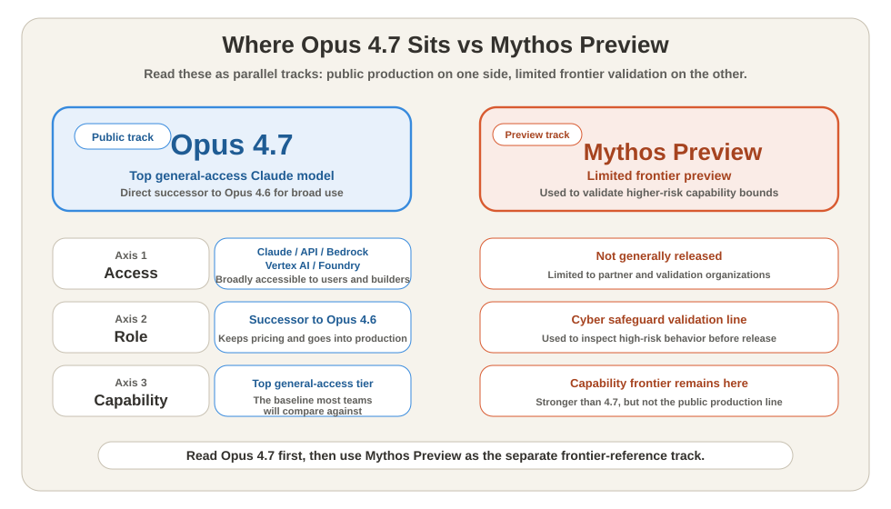
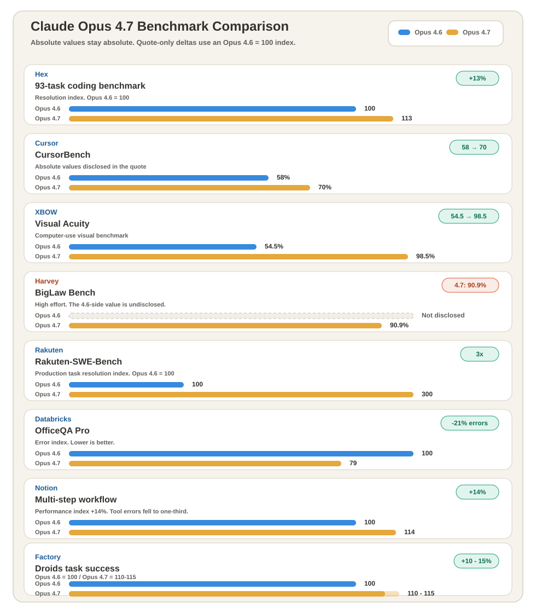
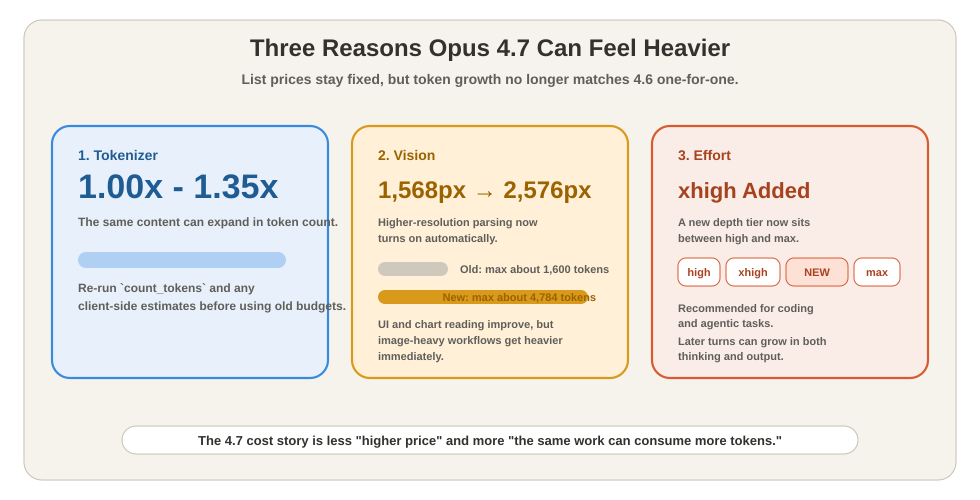
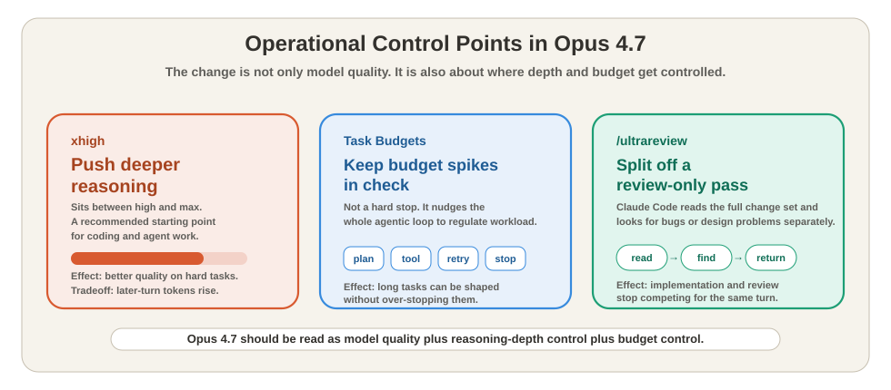

Claude Opus 4.7 vs 4.6: Performance, Pricing, Downsides & xhigh Explained (Apr 2026)¶
For / Key Points
For: Engineers using Claude API / Claude Code / Claude who want a fast read on where Opus 4.7 is better than 4.6 and where cost or operational overhead can rise.
Key Points:
- Opus 4.7 is the direct successor to Opus 4.6, with the clearest gains in software engineering and high-resolution vision.14
- List pricing is unchanged, but the tokenizer change means the same content can consume 1.0-1.35x as many tokens.4
- xhigh, Task Budgets, and
/ultrareviewshipped at the same time, so the change is operational as well as model-level.14
Question for this article: How much stronger is Opus 4.7 than 4.6, and where do cost and control overhead increase?
Positioning¶
Is 4.7 a new branch, or simply the continuation of 4.6?
The short answer is that Opus 4.7 is the direct successor to Opus 4.6. Anthropic positions it as the top general-access model and keeps pricing at $5 input / $25 output.14 It shipped across Claude, the Claude API, Amazon Bedrock, Google Cloud Vertex AI, and Microsoft Foundry on the same day.1
Mythos Preview should be read as a separate track. Anthropic describes it as a limited, higher-capability preview line, and the system card explicitly says Opus 4.7 remains weaker than Mythos Preview, so the capability frontier itself has not moved forward here.12

Once that frame is clear, the right question changes. The practical question is not "Should this be migrated?" but where 4.7 beats 4.6 and which workloads become heavier.
What Improved¶
Which parts of real work actually moved up a tier?
The gains are concentrated in day-to-day engineering flows. Read across the primary sources, and Opus 4.7 is not "slightly better at everything." It is a targeted update for coding, visual input, stricter instruction following, and long-running task continuity.14
- Software engineering: Anthropic puts advanced software engineering and long-running tasks at the center.1 In workflow terms,
prompt intake -> self-check plan -> execution -> result reportbreaks down less easily than it did in 4.6. - Vision: The model now supports images up to a 2,576px long edge, roughly 3.75MP, up from 1,568px.14 Dense UIs and charts become easier to parse, but image token use becomes easier to inflate.
- Instruction following: 4.7 interprets prompts more literally than 4.6.14 That helps on extraction and formatting, but vague prompts stay vague instead of being "helpfully" repaired.
- Filesystem-based memory: Important notes are easier to carry across longer sessions, which makes a bigger difference the longer Claude Code stays in one workflow.1
At this point the story is about strength. The next question is whether that gain is visible in numbers.
Benchmark Comparison¶
Does the improvement show up in metrics, or only in anecdotes?
It shows up in metrics. Customer evaluations cited by Anthropic include CursorBench moving from 58% to 70%, and XBOW Visual Acuity jumping from 54.5% to 98.5%.1 Hex reports a 13% gain on a 93-task coding benchmark, Rakuten reports 3x more production task resolutions, and Databricks reports a 21% error reduction on OfficeQA Pro.1
AWS also lists strong standardized results, including SWE-bench Pro 64.3%, SWE-bench Verified 87.6%, Terminal-Bench 2.0 69.4%, and Finance Agent v1.1 64.4%.3 The pattern is not limited to one partner quote.

The broad reading is simple: the largest gains show up not in single-turn QA, but in work that spans multiple steps, tools, or visual checks.
What Gets Heavier¶
If the model is stronger, what gets more expensive?
The biggest downside is not a price increase. It is effective token consumption. Anthropic's migration guide says the new tokenizer can make the same content consume 1.0-1.35x as many tokens.4 The rate card is unchanged, but the bill can still move.
High-resolution vision matters on the cost side too. Because 4.7 automatically enables higher-resolution image handling, a single image can move from the old maximum of about 1,600 tokens to roughly 4,784 tokens.4 UI-reading quality improves, but image-heavy workflows get heavier.

The main recalibration points are these.4
- Re-measure client-side token estimates for 4.7
- Revisit
max_tokensand compaction triggers - Track output token growth when using
highor above - Rewrite old 4.6 prompts that depended on the model filling in ambiguity
This is not a "more expensive model" in list-price terms. It is a model that can look more expensive if used exactly the way 4.6 was used.
How To Control It¶
If tokens rise more easily, where does the control come from?
The key operational change is effort. Anthropic adds xhigh between high and max and recommends it as a starting point for coding and agentic use cases.14 That helps explain both sides of the release: why 4.7 is stronger, and why deeper runs can consume more.
Control features expanded at the same time. Task Budgets are an advisory budget for the full agentic loop rather than a hard cutoff, which means the model is nudged to regulate workload rather than simply being stopped.4 Claude Code's /ultrareview adds a review-only session that reads the full diff and looks for bugs or design issues separately from implementation.1

The minimum API delta looks like this. In 4.7, enabled thinking is removed, and adaptive thinking plus explicit effort become the path forward.4
from anthropic import Anthropic
client = Anthropic()
message = client.messages.create(
model="claude-opus-4-7",
max_tokens=64000,
thinking={"type": "adaptive", "display": "summarized"},
output_config={"effort": "xhigh"},
messages=[{"role": "user", "content": "Review this diff and list bugs."}],
)
The practical point is straightforward. Harder work is easier to hand to 4.7, but the deeper the reasoning, the more budget control has to come with it.
Safety And The Role Of Mythos¶
Why did Anthropic release 4.7 broadly before Mythos?
Anthropic's answer is cyber risk. The company says Mythos Preview remains limited, while new cyber safeguards are being rolled into the lower-capability Opus 4.7 for broader use first.1 The system card also places 4.7 below Mythos Preview and keeps catastrophic risk in the low range.2
The system card also calls out concrete progress: better refusal on malicious agentic requests, better prompt-injection robustness, and lower hallucination rates than 4.6.2 At the same time, it reports weaker behavior in controlled-substances harm-reduction contexts, where the model can still answer in too much detail.2
The dual-track can feel awkward, but the meaning is clear. The main public track is Opus 4.7. The higher-capability frontier validation track is Mythos Preview.
Summary¶
Opus 4.7 is not just a routine upper-tier refresh of 4.6. It is clearly stronger in coding, vision, and longer workflows, while the tokenizer change, higher-resolution image handling, and high-or-above effort settings push cost pressure in the opposite direction.14
Read from primary sources, the first thing to evaluate is not migration ceremony. It is which workloads gain the most capability and which ones gain the most token weight.
Related Articles¶
Anthropic, "Introducing Claude Opus 4.7", 2026-04-16. https://www.anthropic.com/news/claude-opus-4-7 ↩↩↩↩↩↩↩↩↩↩↩↩↩↩↩↩
Anthropic, "Claude Opus 4.7 System Card", 2026-04-16. https://www.anthropic.com/claude-opus-4-7-system-card ↩↩↩↩
AWS, "Introducing Anthropic's Claude Opus 4.7 model in Amazon Bedrock", 2026-04-16. https://aws.amazon.com/blogs/aws/introducing-anthropics-claude-opus-4-7-model-in-amazon-bedrock/ ↩
Anthropic, "Migration guide", accessed 2026-04-17. https://platform.claude.com/docs/en/about-claude/models/migration-guide#migrating-to-claude-opus-4-7 ↩↩↩↩↩↩↩↩↩↩↩↩↩↩